Upstream Digital Endpoint for Value Chains
Building Digital Capacity
& Vertical Access for the Next Billion Users
Across agricarbon, food security, and rural value chains.
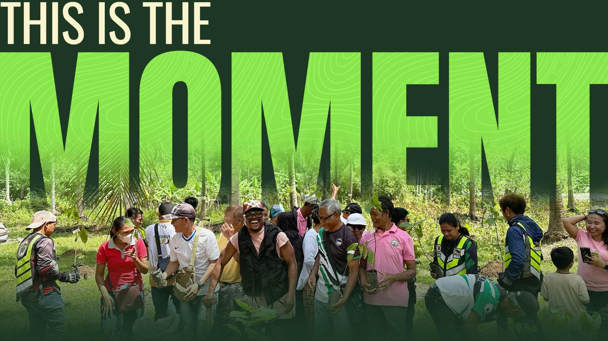
Building Digital Capacity
& Vertical Access for the Next Billion Users
Across agricarbon, food security, and rural value chains.

Paper-based production and sales records leave farmers invisible to financial systems.
Financial institutions cannot assess risk without structured, verifiable data.
No financing to grow their business. Rural economies stay undercapitalized.
Without structured records, farmers cannot access credit, insurance, supply contracts, or climate markets.
If agricultural activity can be structured into trusted data, capital can flow into rural economies.
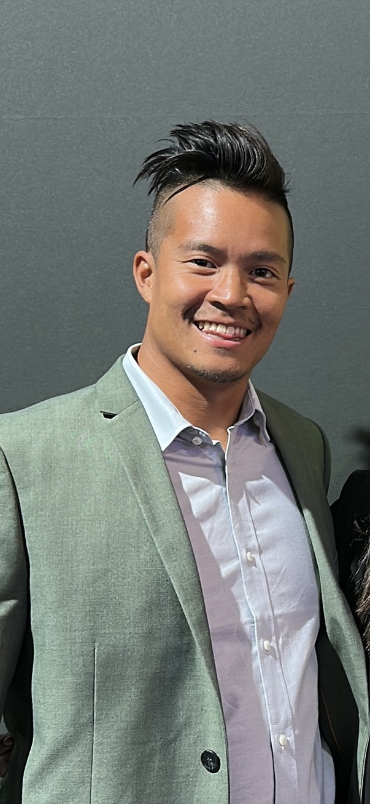
Founder — Integrator
10+ years digital transformation across global enterprises. Led Go-to-Market at 3motionAI (acquired by VelocityEHS). Deployed Microsoft Digital Distribution to 1,900+ institutions. Raised $700K+ for community initiatives in Haiti and DR.
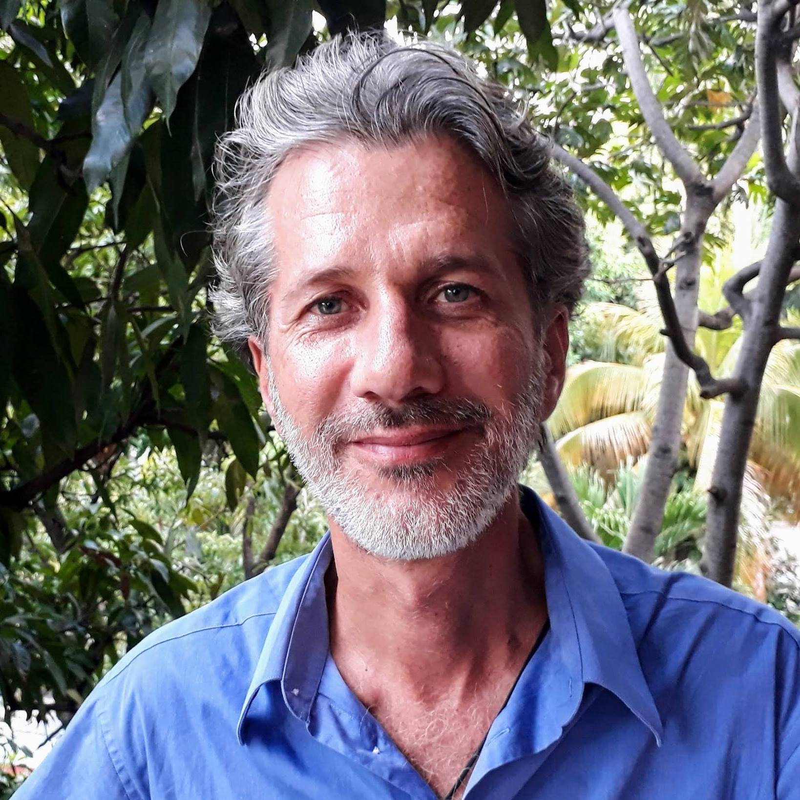
Field User Advisor
Long-time development leader in Haiti. Managed $26M+ into community-led programs. Organized 5,000 women into Self-Help Groups generating $485K in savings. 2.9M trees planted, 82% reduction in infant malnutrition.
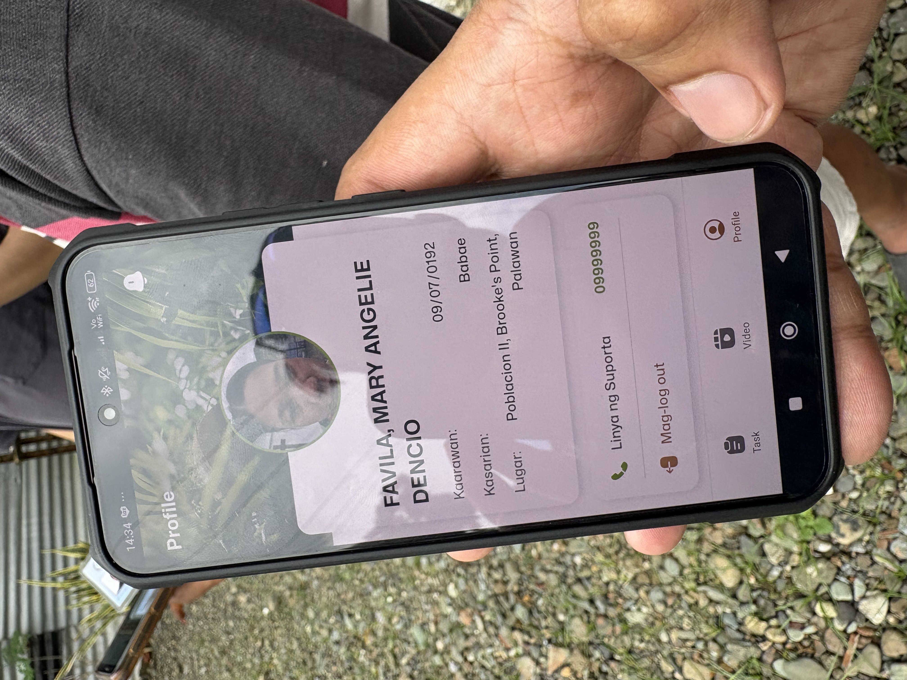
Digital ID Creation
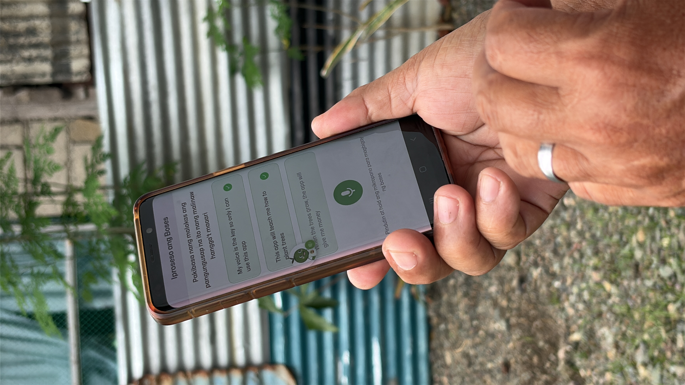
Voice AI Guidance
Real farmers, real phones, real field conditions. Earth Sama works where it matters most.
Each step generates structured financial data — turning agricultural execution into bankable, verifiable records.
Proprietary CV IP adapted for real-world field conditions — low bandwidth, low light, moving targets.
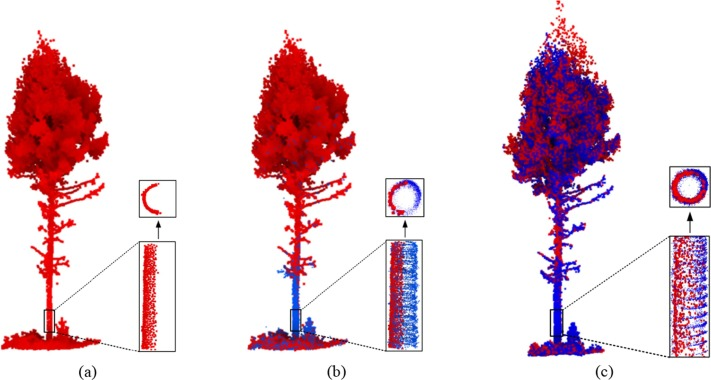
Large-scale poly-cropped agroforestry: coconut, coffee, cacao, and moringa. 380M trees. 25-year growth cycles.
*Estimated annual yield at maturity
~$9.5M ARR over 25 years (TCV ~$238M) from 1M farmers in coconut agroforestry program
$20M/year in penalties redeployed into mandatory rural lending — ~$1M annually at 5% margin
Raised on his grandfather's farm. Founding member of the Black Eyed Peas. Through the Apl.de.Ap Foundation — schools built, scholarships funded, community health programs across the Philippines.
His platform bridges global markets with rural communities through music, media, and cultural engagement.
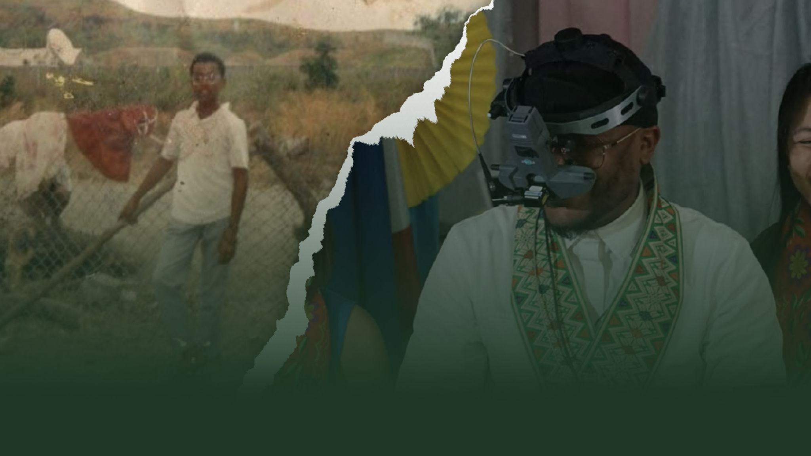
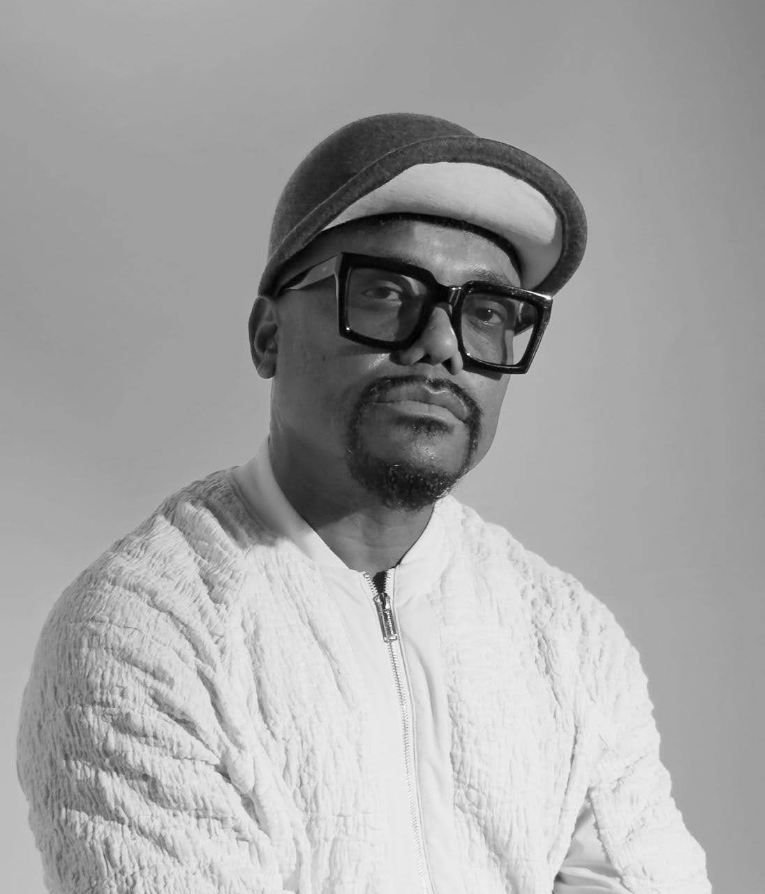
Apl.de.Ap
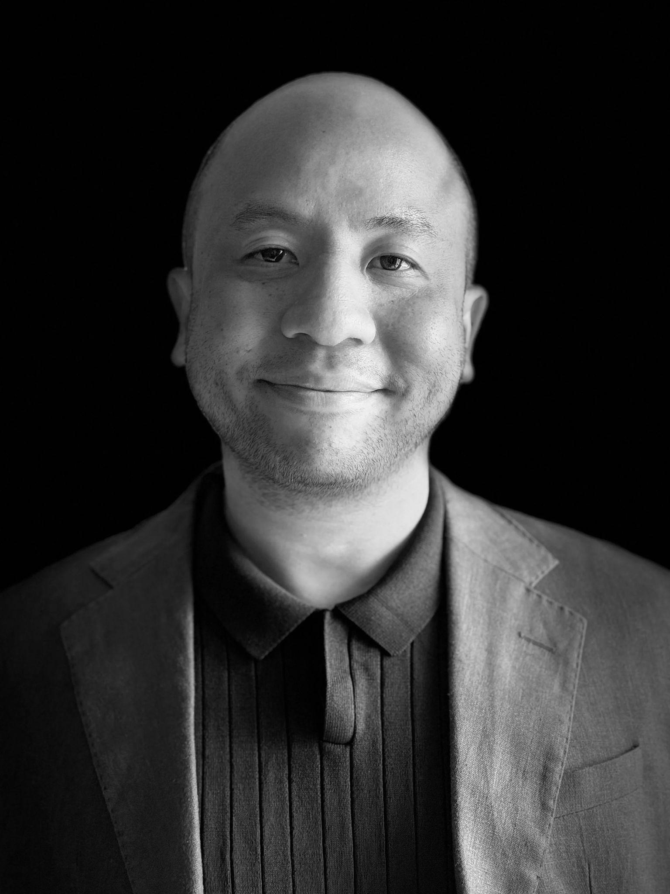
Dan Vo
Audie Vergara
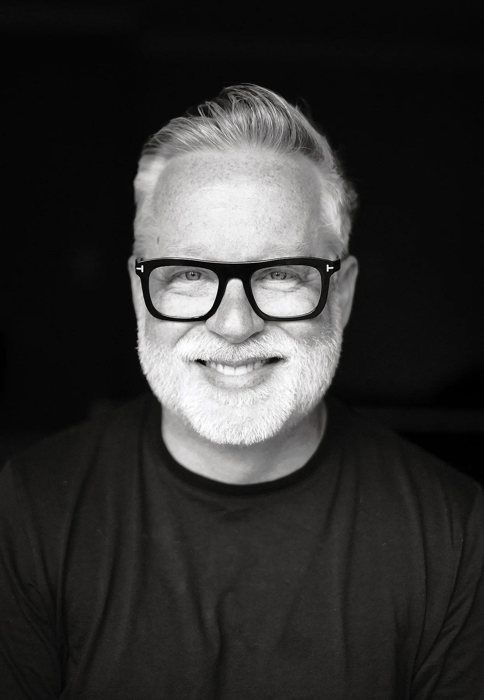
Derek Ruth
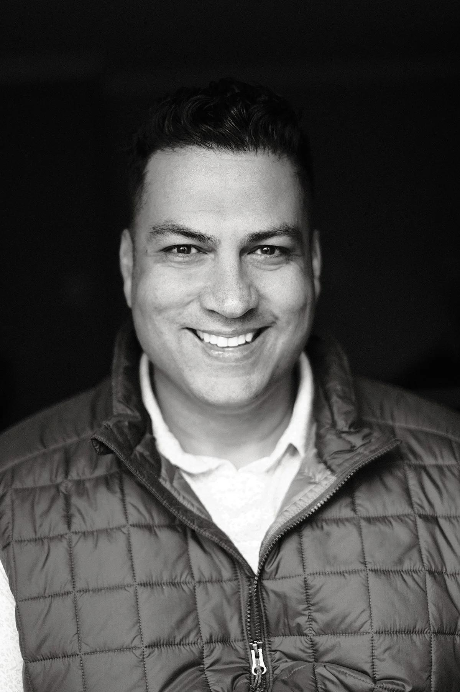
Amit Rikhi
Additional advisors: Rob Majteles, Aarti Tandon, Taylor Black, Amb. Chantale Wong
Institutional + cultural distribution builds both reach and trust.
Organizations already managing farmer groups at scale.
National development programs onboarding farmers.
Large-scale agroforestry and sustainability projects.
Earth Sama replaces paper-based KYC — removing the technical and educational barriers that exclude farmers.
Close a seed round and fulfil two time-sensitive projects in the Philippines for 2026.
Delaware C-Corp HoldCo · Investor returns via dividend
We exist to help farmers rise above the poverty line by creating pathways to sustainable livelihoods.
Digital Public Infrastructure · Next Billion Users · earthsama.com